PITCHKEEP
Premier League ranks
The X
The X
Memes from X.
Man City to bid for Chelsea's £120m-rated Enzo Fernandez
submitted by /u/tylerthe-theatre [link] [comments]
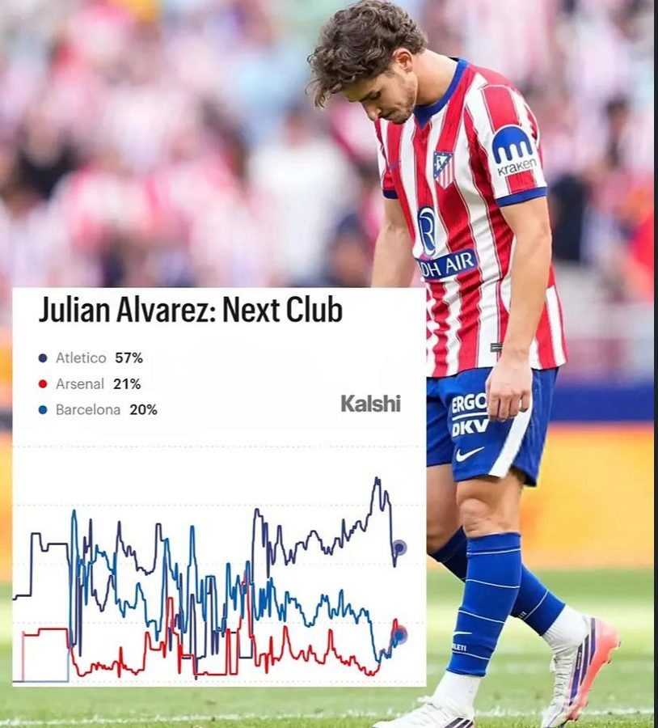
RedditSpider-Man: No Way to Barca
submitted by /u/cottoncandyisgood_3 [link] [comments]
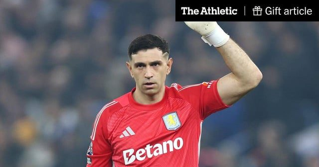
RedditAston Villa goalkeeper Emi Martinez offered to Chelsea
Aston Villa goalkeeper Emiliano Martinez has been offered by his representatives to Chelsea and the Stamford Bridge club are considering the
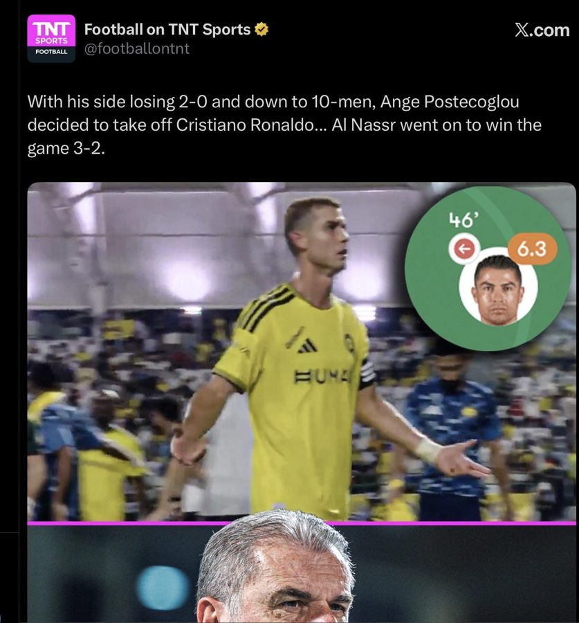
RedditOutjerked by Cristiano himself
submitted by /u/Fun-Ad3626 [link] [comments]
RedditUnc aint leaving cucurella alone
submitted by /u/AccomplishedWatch834 [link] [comments]
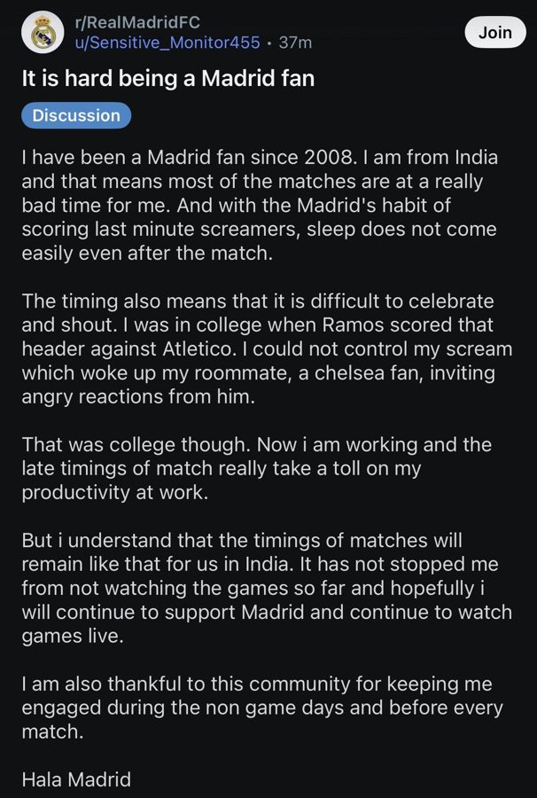
RedditWalk a mile in my shoes…
submitted by /u/Soft-Replacement-397 [link] [comments]
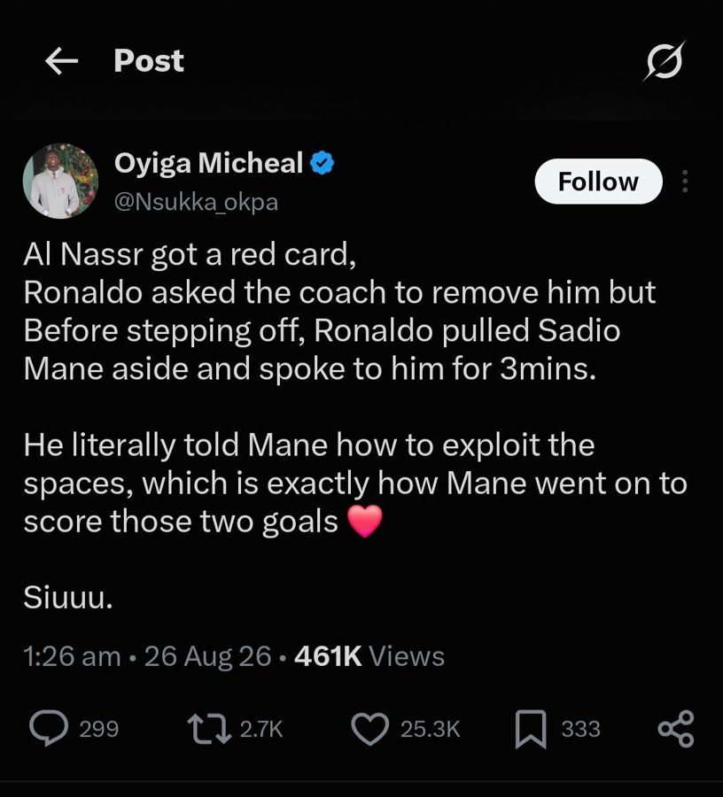
RedditImages AI could never recreate
submitted by /u/Unfair-Gur7325 [link] [comments]
RedditAyyoub Bouaddi transfer: Manchester City complete record-breaking £86m deal to sign 18-year-old Morocco midfielder | Football News
submitted by /u/dreigilb [link] [comments]
 Reddit
RedditMan City to bid for Chelsea's £120m-rated Enzo Fernandez
submitted by /u/dreigilb [link] [comments]
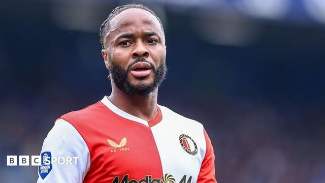
RedditRaheem Sterling charged with dangerous driving after crash on M3 in Hampshire
submitted by /u/tylerthe-theatre [link] [comments]
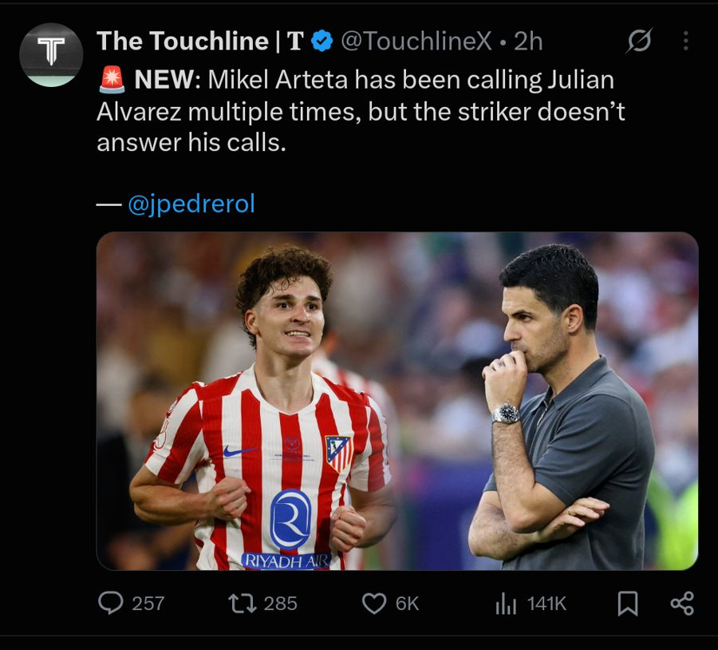
RedditEvery hotel room has a chair for Arteta
submitted by /u/Lonely-Canary-5610 [link] [comments]
RedditJulian not well for next matchday😵💫
submitted by /u/sanchzzzzzzzzzz [link] [comments]
Redditresting sad face 🐐
submitted by /u/FM_highlights [link] [comments]
RedditNewcastle transfer news: Club agree £52m deal for Man City midfielder Nico Gonzalez
submitted by /u/dreigilb [link] [comments]
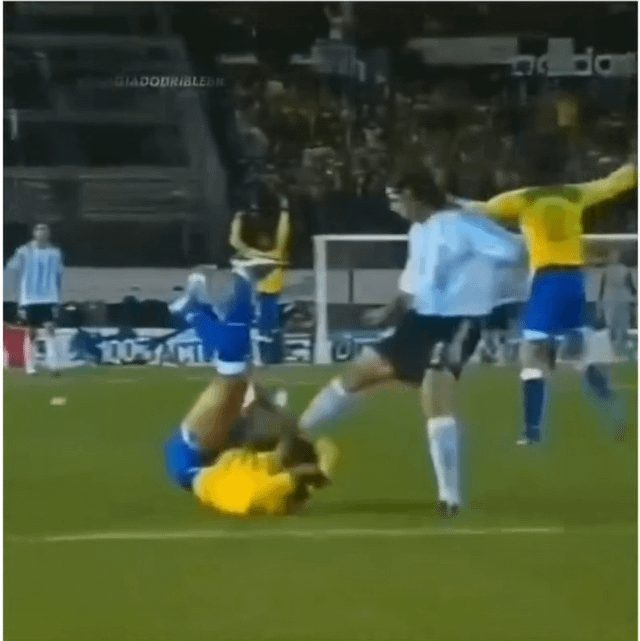
RedditBrazil vs Argentina🔥
submitted by /u/Morra_Seiya [link] [comments]
RedditOmar Marmoush to undergo Tottenham medical ahead of loan with obligation move from Manchester City
Manchester City’s Omar Marmoush is set to undergo a medical at Tottenham Hotspur after the two sides agreed a loan deal for the forward that
RedditRoberto De Zerbi: Tottenham spending set to continue after Sávio move
submitted by /u/tylerthe-theatre [link] [comments]
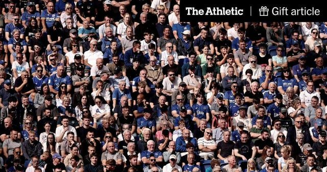
RedditPremier League season tickets assessed: Most expensive? Cheapest? Which clubs have frozen prices?
Despite cost pressures continuing to affect match-going fans, every English top-flight club has a waiting list in operation for season ticke
RedditAntony has more goals for Real Betis than 3 players below combined?
submitted by /u/OtherwiseLuck888 [link] [comments]
RedditOfficial Advertisement for Santos FC Japan Tour 2011
submitted by /u/Wonderful_Advisor587 [link] [comments]
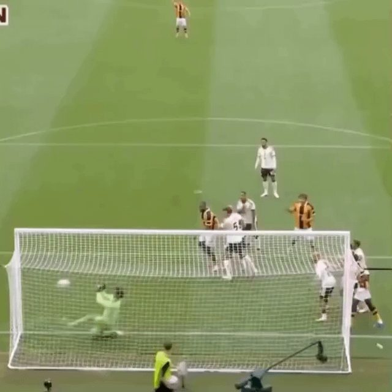
RedditThe Art of Defending
submitted by /u/Lonelydude014 [link] [comments]
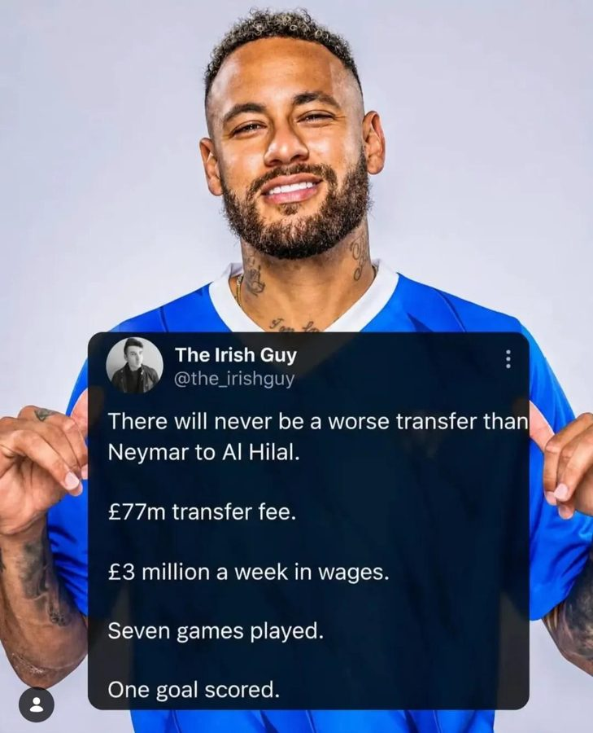
RedditOutjerked by Desert League
submitted by /u/Honest-Category-9601 [link] [comments]
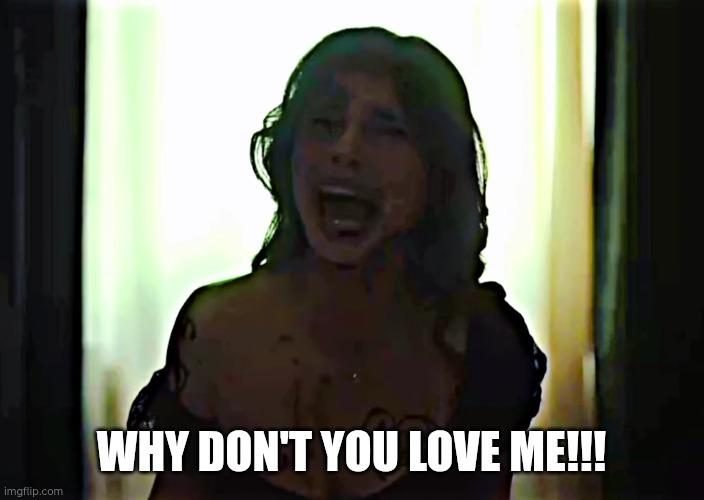
RedditPSG fans everytime they ask why don't football fans admire their team more than they think they deserve
submitted by /u/Prabu-Silitwangi [link] [comments]
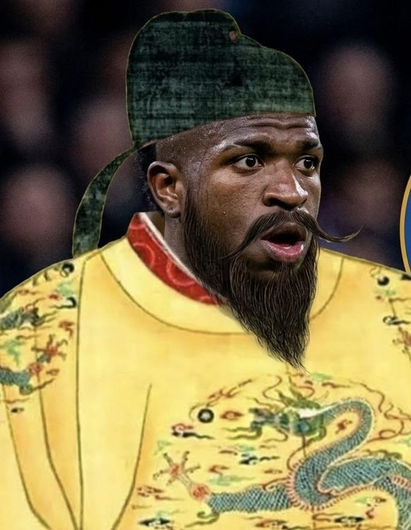
RedditThe Chin dynasty
Excerpt from “A Football History for the Regarded”: The Chin dynasty began in 2026 with a devastating football attack on Mestalla Stadium. R
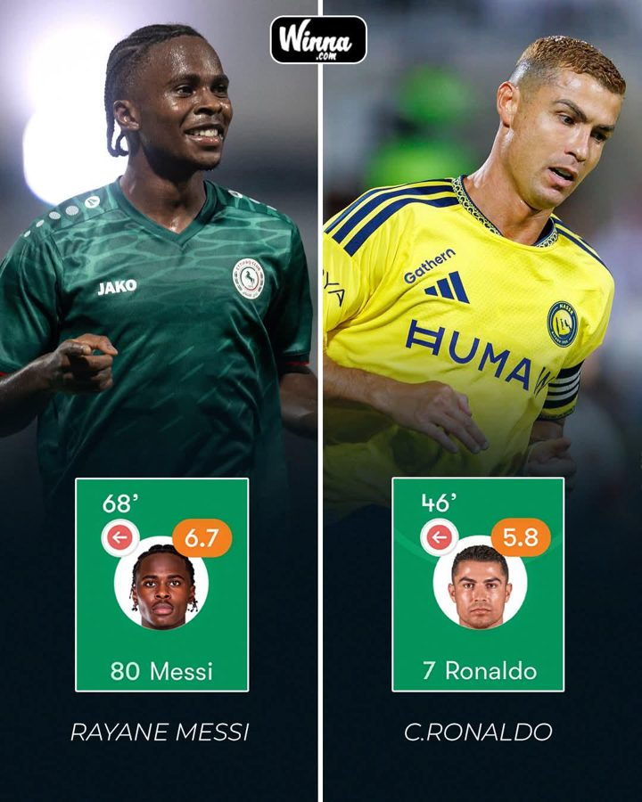
RedditThe debate is officially OVER
submitted by /u/Alex1204chen [link] [comments]
Reddit1. FC Koln Fan
submitted by /u/Ok-Yam4027 [link] [comments]
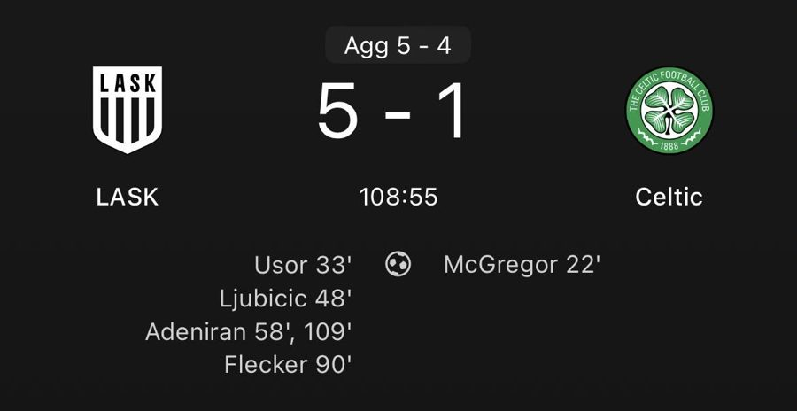
RedditIf you’re feeling down tonight, just remember that at least you’re not Celtic who’ve just bottled a 3-goal lead 😭🙏
submitted by /u/Real-Atmosphere8261 [link] [comments]
RedditPFA Awards 2026: Bruno Fernandes and Khadija Shaw win player of the year awards
submitted by /u/gelliant_gutfright [link] [comments]
RedditFootball gossip: Mateta, Jackson, Fernandez, Jeltsch
submitted by /u/malcolm58 [link] [comments]
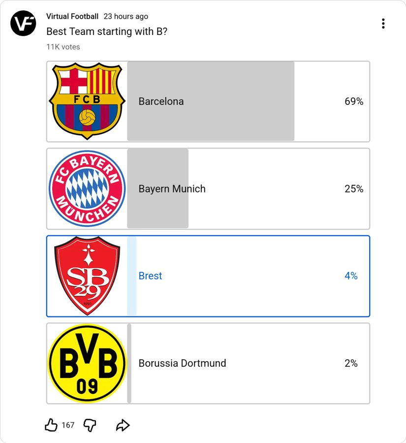
RedditThese YT shorts kids don't know ball
submitted by /u/Every-Damage-90 [link] [comments]
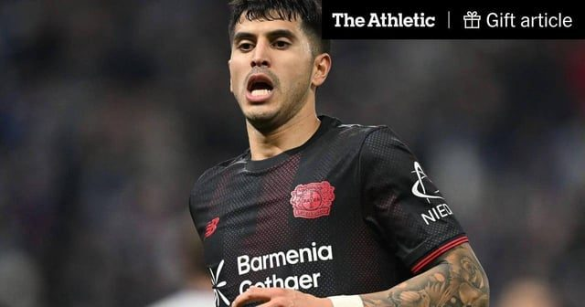
Reddit[David Ornstein] Ipswich close to Exequiel Palacios agreement after €27.5m offer to Bayer Leverkusen
Ipswich Town are close to an agreement with Bayer Leverkusen for Exequiel Palacios. The Premier League side have made an improved offer of €
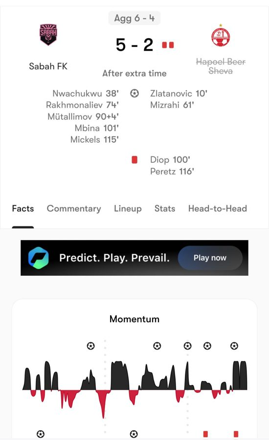
RedditThis loss was not promised 3000 years ago
Forget Real Madrid vs Man City, this is the stuff I want out of the UCL submitted by /u/WheelSingle2494 [link] [comments]